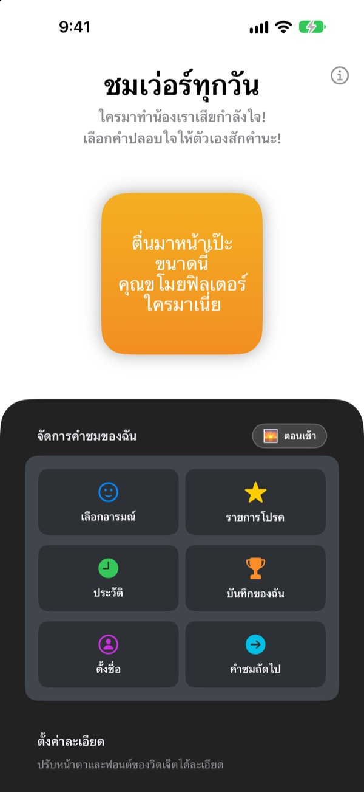
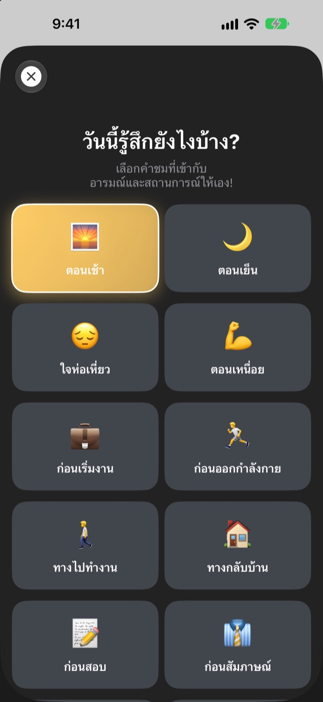
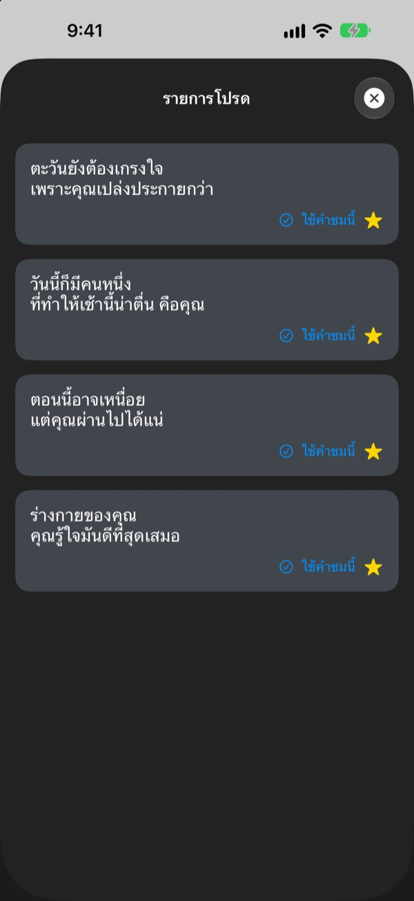
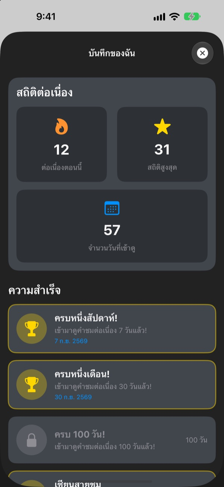

หยิบมือถือขึ้นมาทีไร
แฟนคลับตัวยงรออยู่ทุกที
ชมเว่อร์ทุกวันคือวิดเจ็ตที่ตั้งใจชมคุณเกินเบอร์ ตอนเช้ามีคำชมตอนเช้า ก่อนสัมภาษณ์มีคำชมก่อนสัมภาษณ์ ฟอนต์ สี และพื้นหลังก็ปรับได้ตามใจ
ซื้อครั้งเดียวใช้ได้ทุกฟีเจอร์ ไม่มีสมัครสมาชิก ไม่มีโฆษณา

รับคำชมสักประโยคเลย
เลือกอารมณ์ แล้ววิดเจ็ตจะโชว์คำชมของอารมณ์นั้น กดคำชมถัดไปเพื่อสุ่มจากทั้งหมด 281 ประโยค
คนที่ใจร้ายกับคุณที่สุด ใช่ตัวคุณเองหรือเปล่า
ระหว่างทางไปทำงาน ก่อนสัมภาษณ์ ทางกลับบ้าน เสียงในหัวมีแต่บ่น ชมเว่อร์ทุกวันจะเข้าข้างคุณจากหน้าจอโฮมวันละหลายรอบ แบบเกินพอดีนิดหน่อย พอเผลอยิ้มออกมา ความมั่นใจก็กลับมาบ้าง
คำชมที่เข้ากับอารมณ์ตอนนี้
เลือกจาก 14 อารมณ์และสถานการณ์ เช่น ตอนเช้า ทางไปทำงาน ตอนเหนื่อย ก่อนสัมภาษณ์ หรือ ก่อนเดต แล้วคำชมที่เข้ากันจะขึ้นบนวิดเจ็ตทันที เลือกไม่ถูกก็มี สุ่ม ให้ด้วย

เก็บคำชมที่ชอบไว้ได้
แตะดาวเพื่อเก็บไว้ในรายการโปรด และย้อนดูคำชมที่ผ่านมาในประวัติ แตะ ใช้คำชมนี้ แล้วคำชมนั้นจะขึ้นวิดเจ็ตทันที

แวะมาทุกวัน สถิติก็เพิ่มขึ้นเรื่อยๆ
ทุกวันที่เข้ามาดูคำชมจะต่อสถิติต่อเนื่องให้ยาวขึ้น ครบ 7, 30 หรือ 100 วันติด หรือรวมครบ 50 และ 100 วัน จะปลดล็อกความสำเร็จ

เริ่มได้ใน 3 ขั้นตอน
- 1
เลือกอารมณ์
เปิด
เลือกอารมณ์แล้วแตะอันที่ตรงกับตอนนี้ - 2
แต่งวิดเจ็ต
ในตั้งค่าละเอียด เลือกฟอนต์ สีตัวอักษร พื้นหลัง และรอบการรีเฟรช
- 3
วางบนหน้าจอโฮม
แตะค้างที่หน้าจอโฮม แตะ + แล้วหาชมเว่อร์ทุกวัน
แต่งวิดเจ็ตได้แบบนี้
- ฟอนต์
- 13 แบบ เช่น Futura, Georgia และ Marker Felt
- สีตัวอักษร
- สีไหนก็ได้ที่ชอบ
- พื้นหลัง
- สีไล่เฉดสองสี หรือรูปพื้นหลังที่มีในแอป
- การจัดวาง
- ชิดซ้าย กึ่งกลาง หรือชิดขวา
- ระยะบรรทัด
- ปรับให้ชิดหรือห่างขึ้น
- รอบการรีเฟรช
- คำชมใหม่ทุก 5, 15 หรือ 30 นาที
ขนาดวิดเจ็ตเลือกได้ตอนเพิ่มลงหน้าจอโฮม
ซื้อครั้งเดียวจบ
ตัวแอป
- คำชม 281 ประโยค 14 อารมณ์
- วิดเจ็ตหน้าจอโฮมที่แต่งได้
- รายการโปรดและประวัติ
- สถิติต่อเนื่องและความสำเร็จ
สนับสนุนนักพัฒนา
- เลือกให้ทิปได้ 3 ขนาด เล็ก กลาง ใหญ่
- ไม่ได้ปลดล็อกฟีเจอร์ใด เป็นแค่การบอกขอบคุณ
ให้เฉพาะตอนที่อยากให้เท่านั้น
ไม่มีสมัครสมาชิก ไม่มีจ่ายเพิ่ม ไม่มีโฆษณา
คำถามที่พบบ่อย
เพิ่มวิดเจ็ตยังไง
แตะค้างที่พื้นที่ว่างบนหน้าจอโฮมจนไอคอนสั่น แตะ + ด้านบน ค้นหาชมเว่อร์ทุกวัน แล้วเลือกขนาด
คำชมถัดไปเลือกยังไง
พอเลือกอารมณ์ คำชมของอารมณ์นั้นจะขึ้นวิดเจ็ตทันที หลังจากนั้นวิดเจ็ตจะสุ่มคำชมจากทั้งหมด 281 ประโยคตามรอบการรีเฟรชที่เลือก ในแอปกด คำชมถัดไป เพื่อเปลี่ยนเองก็ได้
เปลี่ยนฟอนต์หรือรอบการรีเฟรชได้ไหม
ได้ ในตั้งค่าละเอียดเปลี่ยนฟอนต์ สีตัวอักษร พื้นหลัง การจัดวาง ระยะบรรทัด และรอบการรีเฟรชได้ เลือกได้ 5, 15 หรือ 30 นาที
วิดเจ็ตไม่เปลี่ยนทันที
iOS เป็นคนตัดสินว่าจะวาดวิดเจ็ตใหม่ตอนไหน บางทีจึงช้ากว่ารอบที่เลือกไว้นิดหน่อย เปิดแอปแล้วปิด วิดเจ็ตจะอัปเดตทันที
สถิติต่อเนื่องนับยังไง
ทุกวันที่ดูคำชมติดต่อกันจะนับเพิ่มวันละหนึ่ง ใน บันทึกของฉัน ดูสถิติปัจจุบัน สถิติสูงสุด จำนวนวันทั้งหมด และความสำเร็จได้
รายการโปรดและประวัติหายไป
ข้อมูลทั้งหมดเก็บอยู่ในเครื่องเท่านั้น ถ้าลบแอปหรือเปลี่ยนเครื่องจะไม่ย้ายตามไป ถ้าไม่ได้ลบแอปแต่ข้อมูลหาย ส่งอีเมลมาบอกได้เลย
ข้อมูลของฉันถูกส่งไปที่ไหนไหม
ไม่ แอปไม่เก็บข้อมูลส่วนตัว รายการโปรดและประวัติอยู่ในเครื่องของคุณเท่านั้น
อยากแจ้งปัญหาหรือเสนอไอเดีย
ส่งได้จาก ติดต่อผู้พัฒนา ในแอป หรือทางอีเมล และ DM Instagram @lee25_ios เห็นแล้วจะรีบตอบ
มีคำถามหรือข้อเสนอแนะ ส่งมาที่ leeo@kakao.com